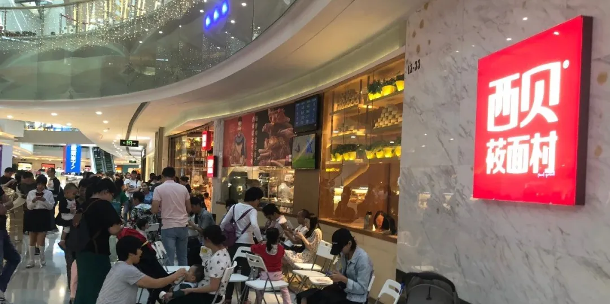
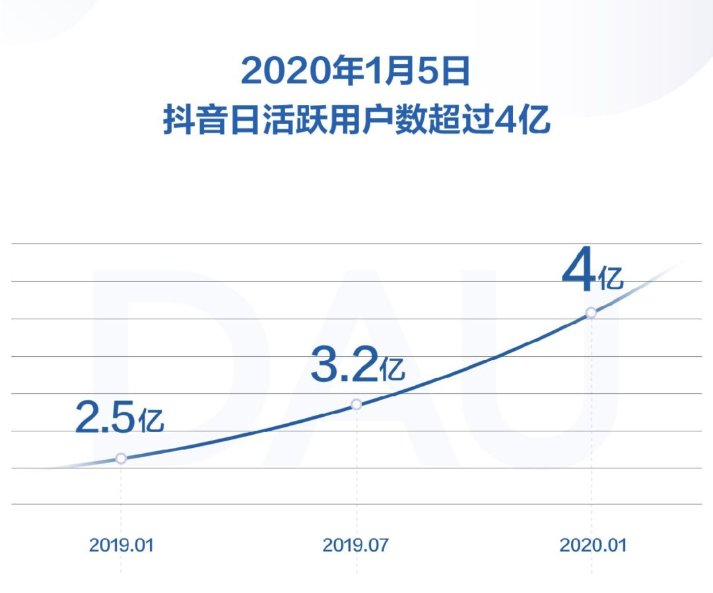
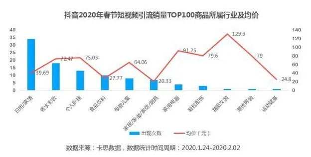
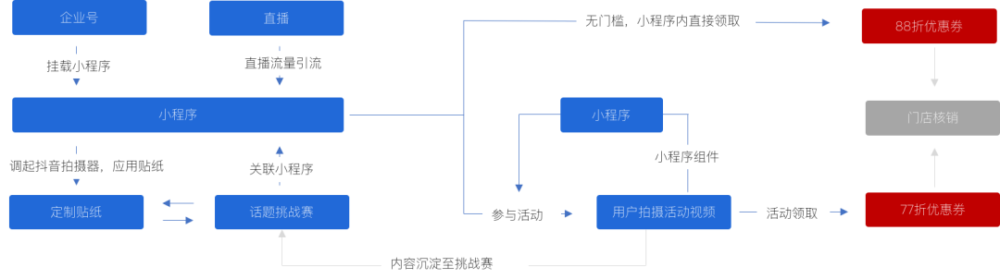
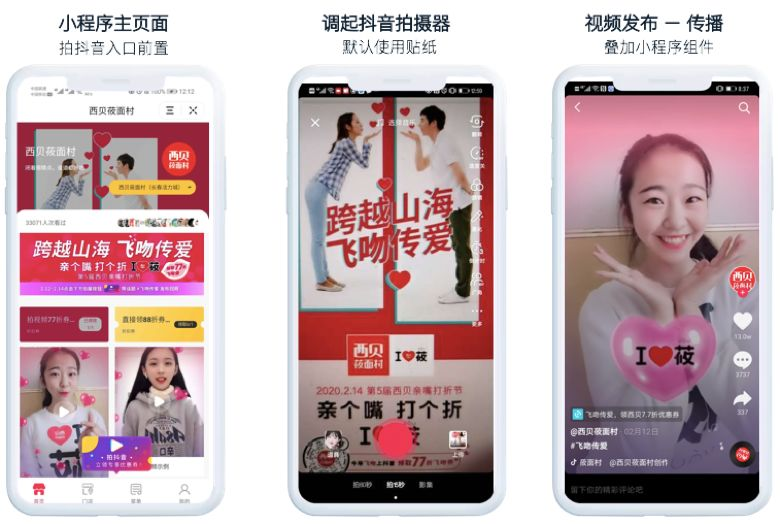

西贝的积极求变，也让我们看到传统营销失效后，抖音全链路整合营销发挥的关键作用。
塔勒布《反脆弱》一书中提到，应对不确定和危机，可以用过度补偿的方式避开风险、增强自己的能力。而实体企业在这次疫情的“黑天鹅”中，或许正迎来“反脆弱”的分水岭。我们认为，实体企业如何找到自救法则，并成为自身的长期抗疫效应，这才是关键。

这次疫情对实体经济带来巨大打击，线下流量几乎归零，餐饮业的打击尤甚。
疫情开始，西贝贾国龙表示公司400家线下门店基本停业，预计春节前后一个月损失营收7-8亿元，让整个行业意识到危机。
此后整个餐饮业受到重创。据中国烹饪协会发布的报告显示，疫情期间78%餐饮企业营收损失达到100%，93%的餐饮企业选择关闭门店，这给已经超过4万亿体量的餐饮业带来不可逆的打击。
疫情是催化剂，脆弱才是本质。疫情使得实体经济迎来分水岭，零售基因在加速业态迭代。现在摆在实体企业面前的，已经不再只是单纯面对这次疫情的影响，而是要立体的思考自身商业模型，是否还能找到新的出路。
思考出路的前提，我们要先思考流量口在哪里？
线上流量口爆发是实体要考量的一个关键点。我们把时间拉回到2003年，非典后使得线上消费成了新风向。“黑天鹅”带来了电商的长足发展，淘宝京东开始崛起，并奠定了今天的电商格局。
而2016年马云提出新零售后，近4年的发展让我们看到线上线下的加速融合，线上流量正在赋能线下实体。
面对疫情，摆在实体企业面前必须得思考的问题：当线下自然流量几乎断流的时候，如何整合线上线下流量，打造高效的营销体系，实现逆增长？
我们了解到，目前抖音平台以其线上大流量为基础（抖音日活跃用户数目前已经突破4亿），通过短视频、直播带货、企业号、小程序等硬核技术实力，助力实体商家复工复产。
比如湖南一家王府井百货10多家零售品牌通过抖音直播开启“云逛街”，短短一天即吸引超83万人次观看，跳转至电商平台销售额超过240万。再如餐饮品牌西贝通过抖音平台全链路整合营销，实现线上流量导流线下门店，情人节活动带动上百万用户参与。


我们认为，流量路径的变迁，需要重新审视目前的商业环境。当下人货场三者之间的关系都在转变，从前端触点到实体转化，抖音已经形成了线上到线下的全链路整合营销方案，为实体行业复产复工加码。
我们以西贝为例来着重聊下。
我们先来看下西贝的发展。从2000年开始，西贝以西北菜为主打，从街边小店到现在的400家门店、年营收达到60亿的知名餐饮连锁品牌。可以说，西贝走到今天的20年里非常不易，经历了市场的长期角逐。
尼采曾说：杀不死你的，会使你更强大。在面对疫情的高压，线下业绩占比90%以上的西贝开始主动求变和自救。
这一次西贝出手，可谓是打破传统的营销方式，开始积极拥抱线上流量。其借助抖音内容传播影响力，开展基于内容的运营活动，探索餐饮行业内容传播+用户互动。
我们注意到，这次疫情期间的“情人节”，西贝借助抖音平台实现全链路营销。西贝的亲嘴节一直是其线下营销的经典手段之一，到今年已经是第五届。这次西贝把它首次转移到线上阵地，破局当前实体场景营销困境，并取得意想不到的效果。
我们总结了其关键点：
其一、强粘性社交活动，引发情感共鸣，吸引百万用户参与。比如西贝的亲嘴节从形式上改为拍抖音视频飞吻，在情人节的特殊时期，能让用户见证甜蜜时刻，引发情感共鸣。活动设置上带有强社交属性，能调动用户参与的积极性，易自发传播。
其二、多工具协同，小程序+直播+定制贴纸+话题挑战赛+企业号联动应用，实现营销多点触达、引导领券。西贝这次在抖音平台上，应用了抖音多工具的协同，通过小程序实现串联，设置了很多领取优惠券入口（企业号、直播、定制贴纸、话题页及所有参与话题的视频等），实现消费者的多触点触达，促发用户无门槛领券和参与活动领券。

无门槛领券。西贝建立企业号+小程序
、直播+小程序 、话题挑战赛+小程序 、 定制贴纸+小程序的关联性，用户进入小程序后可无门槛领取88折优惠券 。
参与活动领券。用户在小程序内一键调起抖音拍摄器，拍抖音短视频参与#飞吻传爱
挑战赛，可领取77折优惠券 。
同时，为了让用户之间形成裂变效应。用户内容传播时会叠加小程序组件，更多用户可通过挂载在内容上的小程序组件进入小程序参与活动，实现基于内容的分发裂变效应。
其三、优惠券到店核销，实现线上流量向线下转化，形成闭环营销路径。用户在活动中领取的优惠券，有效期长达99天，这样能促进疫情结束到店消费，由店主进行优惠券核销。用户在通过观看抖音视频/直播或参与互动---在线小程序领取优惠券---到店消费---优惠券核销，形成闭环营销路径。

再来看下这次营销活动的成绩。
2.12-14仅三个主要活动日，用户参与活动并发放的77折优惠券数量就超过3万张。#飞吻传爱的话题目前累计4.5亿次播放量，近150w个视频。
西贝的积极求变，也让我们看到传统营销失效后，抖音全链路整合营销发挥的关键作用。
小编认为，传统营销套路多以单向思维出发，比较简单的看投入回报，也缺乏系统化的效果追踪和评估。全链路整合营销与传统的营销套路有本质上的区别，抖音的全链路营销主要构建的是基于抖音平台+多工具协同，实现精准用户传播、强粘性社交内容、实际到店核销分析的全链路营销体系，可以做到提高转化率及复购率。这不是单一的、一次性的营销，而是基于线上线下流量的持续转化。
这次疫情，也让我们看到实体餐企面对风险的脆弱性。如何才能高效复产复工，以尽快摆脱这次疫情带来的持续影响，以及此后如何构建自身的长效壁垒，是摆在所有餐企面前需要直面而且迫切的问题。
这得从商业模型的顶层来重新构建，我们从以下几个层面来思考：
从存量到增量。大多数实体餐饮都是基于门店流量为核心，但线下客流存量有限，必须将眼光向线上增量看齐。
从单一路径到全链路。以往线上和线下都是相对独立，现在面临双线融合的大趋势，全链路营销对双线打通实现互通互动非常关键。
从被动到主动。被动营销是等客上门的方式，而主动营销则是在客户未做选择之前就影响客户，吸引其主动进店。考验前端用户数据的精准度和传播力。
从过客到流量池的深度沉淀。流量池的深度沉淀是企业的长期价值。抖音企业号的粉丝非常精准，这些粉丝将持续为商家带来转化。
从无追踪、不可控到数据分析效果。传统营销不能很好的追踪转化效果。而抖音全链路整合营销，商家可以根据营销效果来调整和优化方案。
从以上几个转变来看，标志着传统营销向全链路整合营销转型的趋势。这次疫情面前，抖音基于产品技术与流量实力，打造的全链路整合营销，能有效帮助实体行业复工复产。并在此后，长期助力商家打通线上线下流量，形成一套全新的营销方案。
Charles Handy在《跨越“S型曲线”的二次增长》提到，企业如果想获得跨越式发展，就必须以第二曲线式的增长方式取得十倍速的增长。而对于实体商家而言，能将线上流量高效转化，将取得长足竞争力。